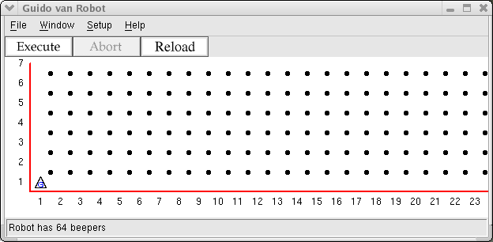
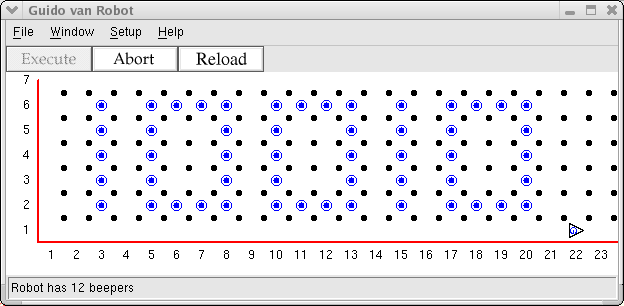

Guido has just turned 18 and wants to let everyone in the universe to know it.
Since he cannot talk, he can only write the number eighteen using beepers.
Guido is a robot and only knows binary, so 18 in decimal is represented as
10010.
Define these new instructions:
drawone to draw a numeral 1 in beepersdrawzero to draw a numeral 0 in beepers
Use those instructions in a GvR program to create his birthday message. Each
instruction should properly position and orient Guido for the next digit. The
main program should use the drawone and drawzero and
instructions to make a binary 18.
When the program starts, the display should look exactly like this:

When he is done, the display should look exactly like this:

Copyright © 2003 Roger Frank.